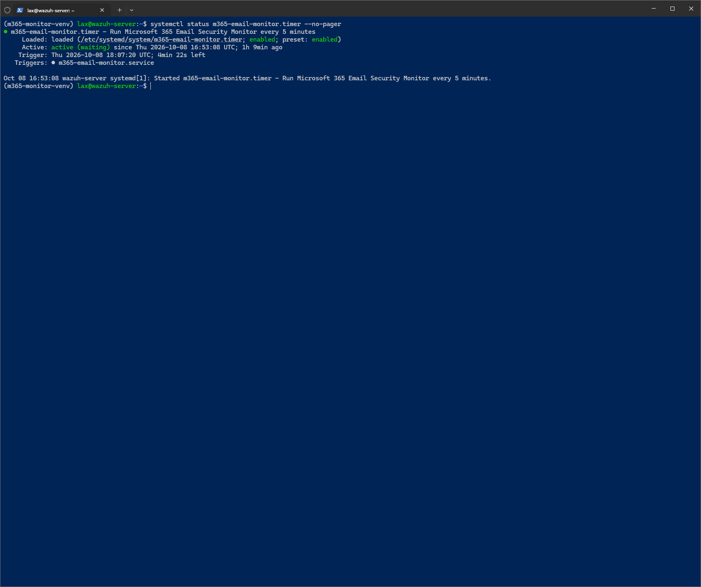
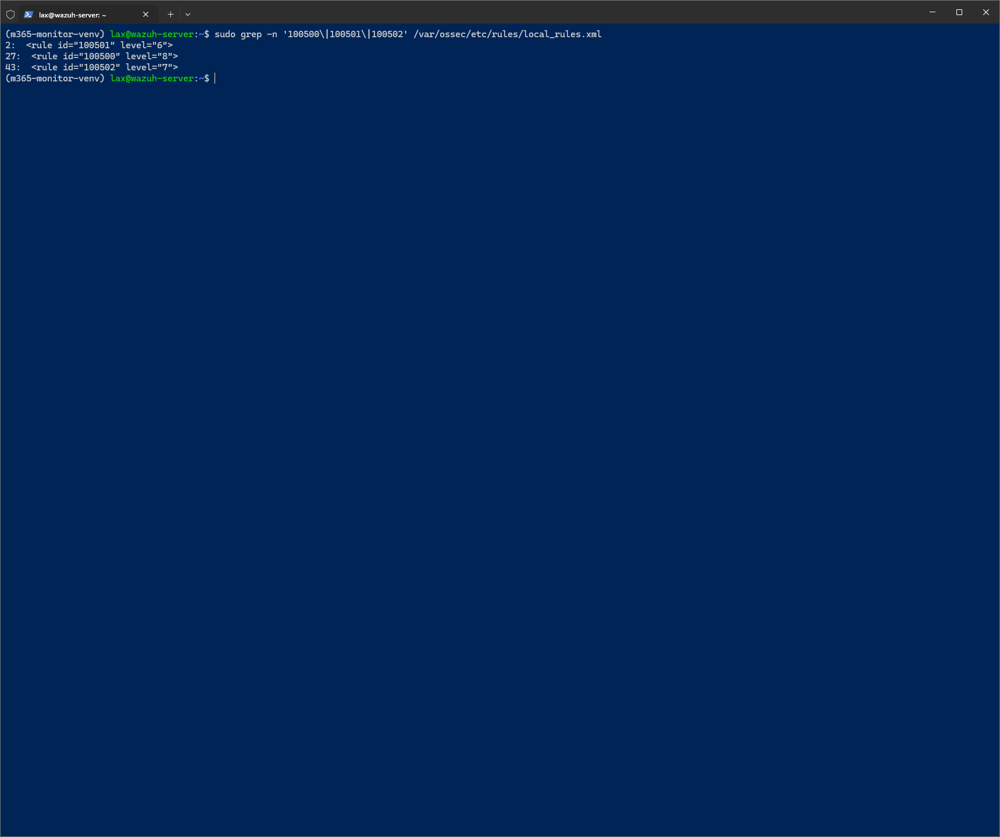
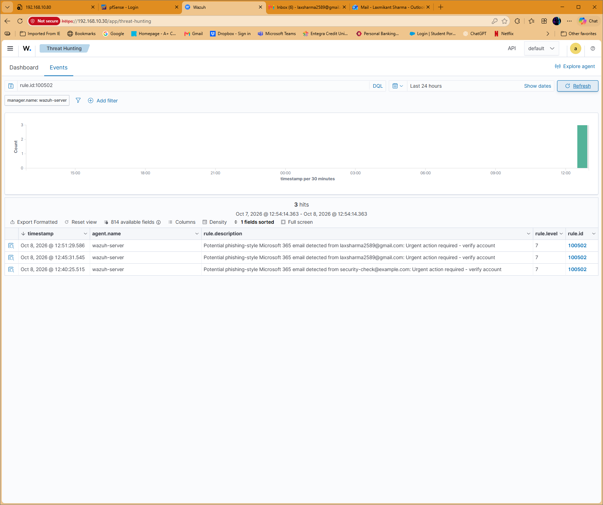

100500 · Level 8
Microsoft account security notifications.
Connected a personal Outlook mailbox to Microsoft Graph and Wazuh for automated metadata collection and email-security triage. Completed and validated October 8, 2026.
Controlled Gmail test → Personal Outlook
→ Microsoft Graph (delegated Mail.Read)
→ Python / MSAL + message-ID deduplication
→ JSONL → Wazuh JSON ingestion
→ Custom rules → Threat Hunting
systemd timer → monitor service every five minutes
Used device-code sign-in and silent token reuse with protected local files. Collected subject, sender, received time, importance, and read status. Deduplication avoided repeating previously collected mailbox messages.
Microsoft account security notifications.
High-importance email; validated with synthetic events and live Wazuh ingestion.
Phishing-style subject keywords; verified using a real Gmail-to-Outlook test.
A harmless test email with subject “Urgent action required - verify account” was collected by the automated monitor and matched rule 100502 at level 7 in Wazuh Threat Hunting. The dashboard shows two separately sent real test messages plus an earlier synthetic test.



Hands-on home-lab work using a personal Microsoft account. Subject keywords and high importance are triage signals and do not prove maliciousness. This project demonstrates integration, automation, rule testing, and investigation; it does not claim enterprise production deployment or comprehensive phishing detection.
Technical documentation ↗